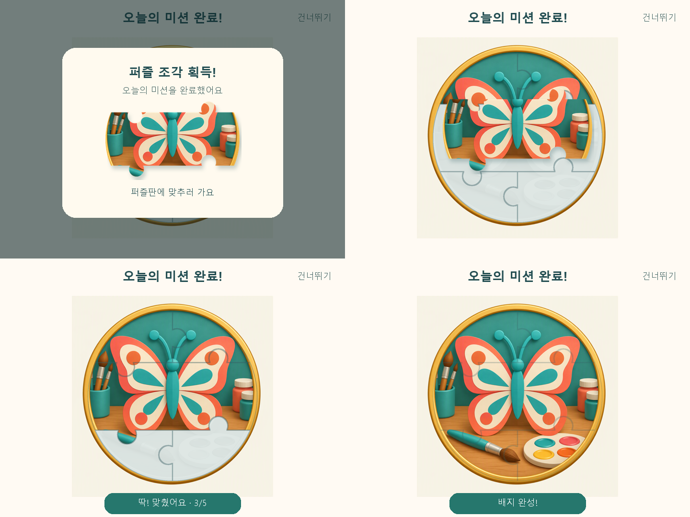

하루 한 조각,
퍼즐을 맞춰 배지 완성!
오늘의 미션 완료 → ‘퍼즐 조각 획득!’ 팝업 → 같은 조각이 퍼즐판으로 이동 → 빈 홈에 맞춤 → 배지 완성

리뷰 포인트
팝업에서 약 1.1초 동안 획득 조각을 크게 보여줍니다. 팝업이 사라져도 같은 조각이 남아 약 0.96초 동안 퍼즐판의 홈으로 이동합니다. 추가 확인 버튼 없이 자동으로 이어집니다.
다섯 번째 조각까지 맞추면 ‘배지 완성!’을 표시하고 얇은 퍼즐 경계는 남깁니다. 건너뛰기나 동작 줄이기는 결과를 즉시 보여주는 기준입니다.
단계별 시안
